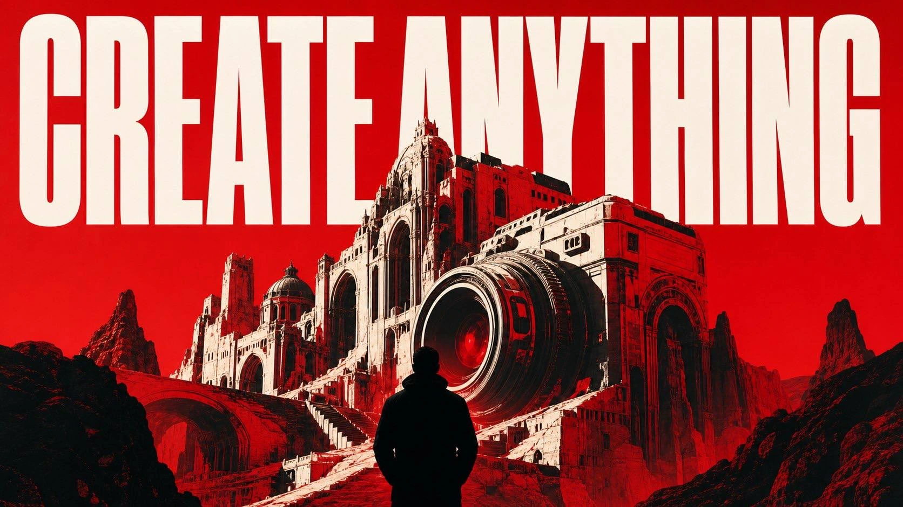

One dominant subject, one large symbolic shape and one controlled colour contrast. The idea reads before the detail.
Visual prompt tool
LIVE-ACTION
MATRIX DNA
One clean billboard world. Any idea.
Large practical shapes, real-camera behaviour, readable blacks, controlled emerald light and skin with actual photographic detail. Build the look around your own subject.

The visual system
Simple shapes.
Expensive finish.
The prompt keeps the world clean enough to feel photographed, while leaving the central image open to your own idea.
Organic motion-picture colour, soft highlight rolloff, practical bloom, natural reflections and rich but readable blacks.
Natural pores, fine facial variation, dimensional form and real tonal transitions without plastic smoothing or fake grit.


AI-Verse community
Create professional AI ads and cinematic content.
Join AI-VERSE, 350+ members and create professional AI ads and cinematic content from your phone or PC. No experience needed. Make your first client-ready visual by Day 2.
JOIN FOR FREEPrompt tool
Put your idea
through the DNA.
Enter the billboard idea and the lead subject. The fixed visual system stays intact while the creative input changes.
Your inputs
Keep both fields simple. Start with one clear image idea and one clear subject.
Ready
Copyable prompt
Copy the complete master prompt into your image model.
AI-Verse community
Turn one look into a whole visual world.
Join AI-Verse for more practical image, video and sound workflows.